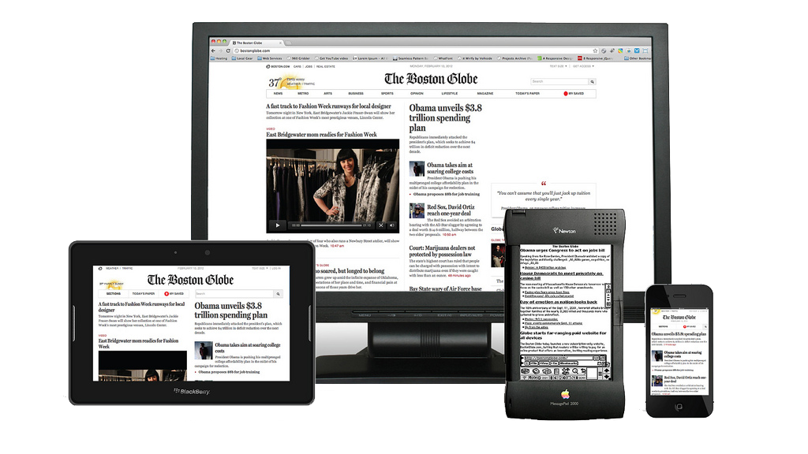
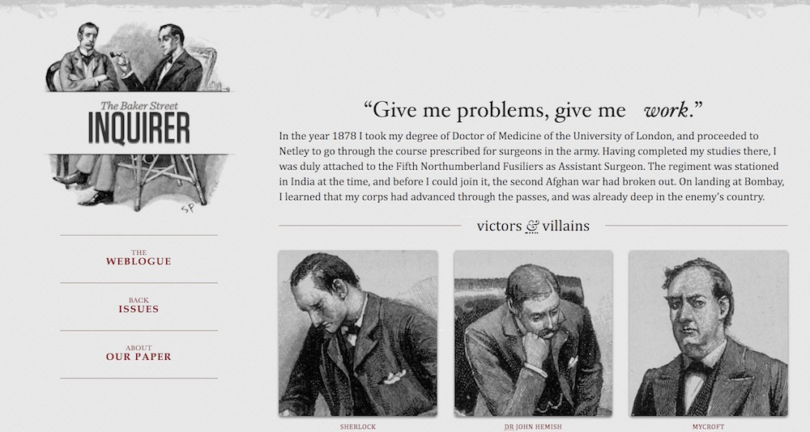

The (Mostly) Complete History of Layout on the Web Part 2: Responsive Design
Responsive design, though it may feel foundational and second-nature to some of you, did not simply blink into existence. It stands on the shoulders of the greatest achievements in web design, building off of years of trial and error. In fact, I’m not exaggerating when I say the history of responsive design is the history of layout on the web.
When we last left off, flexible web design had become the dominant design philosophy on the web, it’s origin dating all the way back to the late 90’s. It was thanks to skilled developers like Glenn Davis, Cameron Adams, and Zoe Gillenwater that the web managed to shake off some of the influences of print design, and forge its own path.
And all the while, the W3C was working on something new for CSS called media queries. Media queries were going to allow developers to specifically target device characteristics, like resolution and viewport width, and change the attributes of CSS selectors based on the result. So it would, for instance, be possible to define one set of styles for large, high-resolution displays and an entirely different set of styles for a much smaller one.
Media queries were nothing new. When Håkon Wium Lie drafted up the original proposal for CSS back in 1994, he included them in, but they were scrapped in an effort to make CSS1 lean and easy to implement. That didn’t stop the W3C from trying though. When the specification for CSS Level 2 was published in 1997, it also included a sample implementation of media queries. Yet still, browsers didn’t implement the feature. It would take 15 years for media queries to actually make their way into browsers, starting in 2009.
Which, of course, had everything to do with the iPhone.
Steve Jobs demoed the iPhone for the very first time in early 2007 at Macworld San Francisco. They started selling later that year, and instantly changed everything about our digital lives. The web was no exception. The iPhone came bundled with its own Safari browser (minus Flash support), fully loaded with the latest HTML5 and CSS standards.
There was a bit of a snag though. Most of the web had been designed for larger screens, built on top of 12 column grids that broke content out into 2 or three separate columns. That was far too wide for a 320 pixel screen. Websites that had stuck to fixed-width designs were basically hopeless. But even fluid layouts got pretty squished on the iPhone and required users to clunkily pinch and zoom their way around the web.
The first widespread solution to this problem was to create a new site altogether, one that was built specifically for the iPhone. Usually this site was placed on an m subdomain, earning the moniker m-dot sites. A little bit of device detection determined if you were using a mobile device like the iPhone and redirected visitors to the m-dot site, often with different HTML and always with different CSS and layout, something like a one-column grid.
At best, this technique was always meant as a stopgap. The device detection was buggy at best. And already, Apple was making plans for the iPad, and other companies put out their own lines of mobile devices, each with a different form factor. A growing number of devices meant an ever-increasing number of codebases to maintain. One site for each new type of device.
Ethan Marcotte was determined to find a better way.
He and his team at Filament Group were working on exactly this problem for a new version of the Boston Globe. An m-dot site was out of the question for them. There was, as mentioned, the issue of maintenance. Filament didn’t want to have to independently keep up with two separate codebases. That was definitely one reason for their decision.
Here’s another. Marcotte was a member of the Web Standards Project. He and his colleagues were standards advocates going way back. They understood that just like in the earliest days of web layout, the iPhone was just another (given, an extreme one) example of the web being flexible. Nothing had changed. Separation of style from structure was still essential. Mobile sites violated this principle; mobile users were served different markup, and ultimately different content, from desktop users. Content was being dictated by presentation, and the web was sliding backwards to the days before CSS.
So Marcotte got to work on something new, mixing together the most clever techniques of the past. He turned first to flexible grids, already a best practice in most web design circles. When coded up properly, fluid grids would expand and shrink based on the width of the viewport. Using percentage width grid columns, and a few clever styles, he could at least make sites that were usable on desktop and mobile browsers using the same CSS. They might be squeezed extra tight on mobile devices, but at least it rendered the content usable.
Images were still a problem though, as they were constantly bursting outside of their container and out onto the sides of the screen. So he pulled in the flexible images technique, adding one simple CSS rule to iron that all out:
The final touch though, Marcotte’s greatest insight, was media queries. He was inspired by what Cameron Adams had done with resolution-dependent layouts and realized that with media queries finally making their way into browsers he could do something similar. Except he wouldn’t have to turn to hacky Javascript for a solution, he could fall back on the latest developments of CSS.
Using media queries, Marcotte laid out a new approach for web layout. One he called responsive web design. It allowed for one set of styles to be defined for smaller screens, and another for larger screens. Media queries meant developers could group together a list of rules for devices under, say, 400 pixels. And they could have another group of rules for devices larger than that. Two designs. One codebase. And the combination of fluid grids and flexible images took care of everything in the middle.
Marcotte published this new approach in an article on A List Apart. Responsive Design represented a massive shift in the industry, and is one of the most important breakthroughs in the history of web design. It offered a way forward that built on the work of the past, and embraced and recognized the natural flexibility of the web.
Marcotte opened his post with a quote from John Allsopp’s A Dao of Web Design. It is a fitting tribute. In many ways, responsive design is a continuation of the creative exchange Allsopp had contributed to almost a decade earlier. The promise of CSS, the promise of the web, was a medium accessible to all people in all places. Flexible design delivers on that promise. And so does responsive design.
Added to the Timeline
May 25, 2010 - Responsive Web Design Ethan Marcotte publishes an article in A List Apart titled "Responsive Web Design" that introduces a revolutionary new approach to CSS layout on mobile devices. It merges fluid grids, flexible images, and media queries to create layouts that respond to the width of the browser. Within a couple of years, responsive web design will become the industry standard.
Sources
- Jeffrey Zeldman. "A Dao of Responsive Liquid." Zeldman on Web & Interaction Design. November 11, 2017. http://www.zeldman.com/2017/11/19/dao-responsive-liquid/
- Sarah Horton. "Responsive Design: An interview with Ethan Marcotte." Rosenfeld Media. March 3, 2014. http://rosenfeldmedia.com/a-web-for-everyone/responsive-design-an-interview-with-ethan-marcotte/
- Ethan Marcotte. "Responsive Web Design." A List Apart. May 5, 2010. https://alistapart.com/article/responsive-web-design
- Christopher Blizzard. "a short introduction to media queries in Firefox 3.5." Mozilla Hacks. June 6, 2009. https://hacks.mozilla.org/2009/06/media-queries/
- Cameron Adams. "The Man in Blue > Resolution dependent layout." The Man in Blue. September 9, 2004. http://www.themaninblue.com/writing/perspective/2004/09/21/